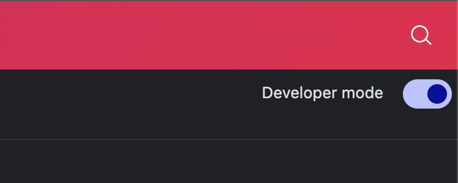
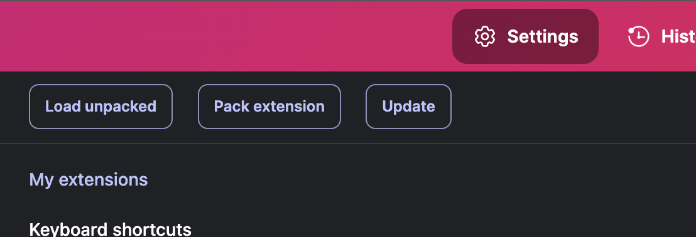

Get Started
Download the files and follow the simple steps for manual installation.
Download Extension (ZIP)How to Install
- Download: Click "Download Extension (ZIP)". You'll need to create a ZIP file of your extension folder (containing `manifest.json`, `background.js`, `content.js`, and `assets`).
- Unzip: Extract the downloaded file to a permanent folder on your computer.
-
Chrome Extensions:
Open
chrome://extensionsin your browser. - Developer Mode: Toggle on the "Developer mode" switch in the top right corner. 
- Load Unpacked: Click the "Load unpacked" button that appears. 
- Select Folder: Choose your unzipped extension folder from the file dialog.
- Done! The "Bored" extension will now appear in your list. Test it by playing some media!